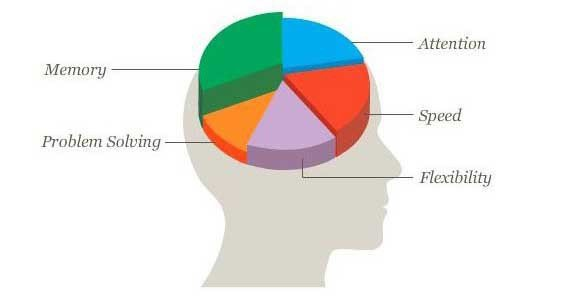

The 'Brain-Enhancing' Smart Pills That Are Sweeping Silicon Valley
We expose the truth behind a ground-breaking pill that has many experts furious. Studies have revealed it boosts brain power by up to 89.2%, sharpens your mind and sky-rockets your energy levels. With such overwhelming evidence and media mention, the question is not whether the pill works, but whether it should be legal.
Welcome To The Future - The use of a Legal Study Drug known as Retro X Focus has skyrocketed on college campuses across the US since coming back on the market in September. It’s being touted as an Adderall replacement, and many students are taking full advantage of its availability to buy online without a prescription.
There has been much controversy around this memory-enhancing pill, not only on college campuses, but also in the media. It first came into the spotlight when the movie Limitless became a box office hit and several blogs started comparing it to Adderall. Sales tripled overnight as students, athletes, entrepreneurs, and business executives all wanted to get their hands on this powerful brain enhancer.
Retro X Focus, which has no recorded side effects in any clinical trials, was soon the target of critics who claimed it was too powerful to be sold without a prescription. Other people in academic circles insisted that it provided an artificial edge for its users and was unfair to those who weren’t taking it. This led to it being banned from quiz shows and at many top universities as well. Facing outside pressure, the creators of Retro X Focus were eventually forced to halt production of the Limitless Pills.
Fortunately, after 3 years of litigation and clinical studies showing its safety, the online ban was finally lifted and the creators of Retro X Focus were allowed to resume selling on their website. Its reappearance has thrilled users around the world — people who genuinely suffered during its absence. “My ability to think and focus more than doubled when I was able to buy again. The pill’s return prevented me from dropping out of college,” a premed student told us.
 Free Trial Bottle of Retro X Focus
Free Trial Bottle of Retro X Focus
Trial Bottles Still Available as of:
We tested it ourselves — is it all hype?
With so much praise from the media and countless reviews from people experiencing success with , we at Health Science Today wanted to verify whether this was all hype. Practically everyone in our building volunteered to test it out, but we chose our Health & Science Editor, Alan Frasier. Below is his account of using Retro X Focus over a 4 week period.
My Results — 4 Weeks on Retro X Focus
Week One
Buying a bottle of Retro X Focus proved to be tougher than I ever imagined. It was SOLD OUT on their website almost immediately after coming back on the market. Some Ebay sellers were asking $300 for just 1 Bottle! That’s too rich for me. I finally secured a few bottles at their regular price after waiting 2 long weeks for Retro X Focus to restock.
About 30 minutes after taking my first pill, I felt the effects kick in. It started with a pleasant wave of calmness that washed over my entire body like a warm blanket. The mental fog and stress I’d been carrying around vanished instantly. Soon, I reached a level of alertness and concentration I’d never experienced before. Sounds didn’t even register. It was like walking around on a winter day after it just snowed. It became easy for me to ignore distractions and outside noises. Best of all, there weren’t any of the negative side effects like I get when taking Adderall.
Week Two
I was a bit concerned that Retro X Focus would stop working for me after one week. Not so. I am feeling even more focused and energized than before. After a 10-hour work day my energy levels were still high, and I was focused and determined to finish all tasks for the day. Retro X Focus improved my ability to focus and function, and I made absolutely no change to my diet, exercise or work schedule. My results came from only taking Retro X Focus.
Week Three
The effects of Retro X Focus are still with me, and I was pleased at how many items on my to-do list were crossed off. Previously, I had problems starting and completing tasks. Retro X Focus has me laser-focused on the job at hand, and I am suddenly able to get things done before I move on. I noticed throughout the week I was hardly ever stressed, and I was able to control my emotions without losing focus. I expected to run out of steam around the third week due to my body getting used to the ingredients. But my energy levels haven’t dipped at all. They remain steady throughout the day.
Week Four
I was given the nickname “Superman” at the office, as I’ve become the most productive member of the staff. I give all the credit to Retro X Focus. The drug worked as well this week as it had in previous weeks. My mind is crystal clear and I’m able to recall stored memories with near perfect accuracy. It’s unbelievable how much has changed in just 4 short weeks. It’s not like I became a genius overnight after taking Retro X Focus, but it’s definitely improved my memory and the speed at which I process new information.
In conclusion: Over the past 4 weeks, I found myself bouncing out of bed, sometimes even before my alarm went off because I couldn’t wait to take Retro X Focus. Things that used to annoy me were no longer an issue. I hardly got stressed and when I did, I was able to control my emotions and get back into peak performance mode. One thing I didn’t expect was the euphoric feeling I got while doing work on Retro X Focus. As a result, I’ve enjoyed my work so much more and my mood has greatly improved. In fact, my co-workers keep making fun of me for walking around with a permanent grin on my face.
I’ve tried modafinil and countless other smart drugs, but this is by far the closest thing to feeling like you are the guy from Limitless. Don’t just take my word for it though; this is something you need to experience for yourself. For your convenience, I’ve provided a link below for a free trial bottle of Retro X Focus.
Free Trial Bottle of Retro X Focus
Trial Bottles Still Available as of: